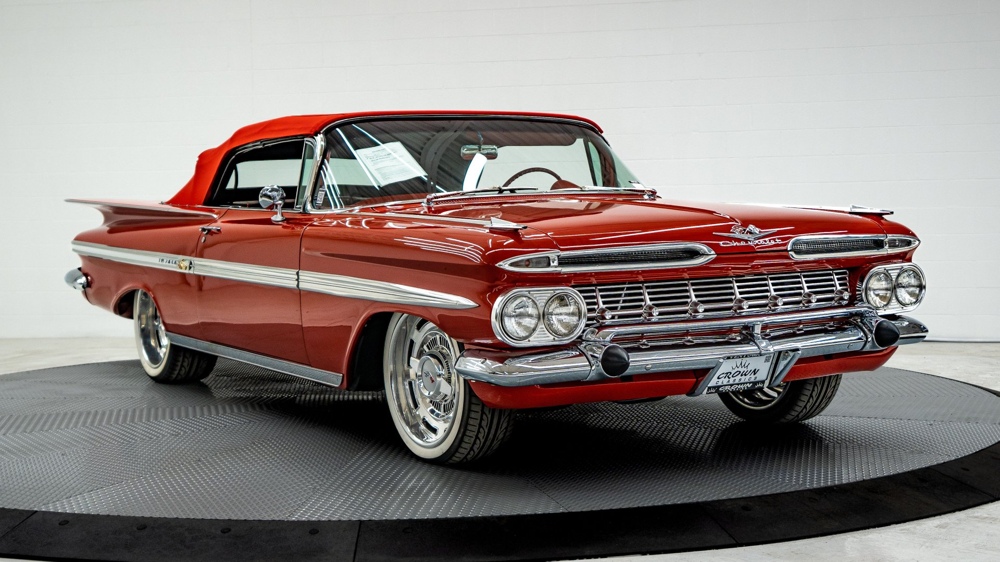

Muscle car is a description according to Merriam-Webster Dictionary that came to use in 1966 for "a group of American-made two-door sports coupes with powerful engines designed for high-performance driving."[1] The Britannica Dictionary describes these as "an American-made two-door sports car with a powerful engine."[2]
As intimidating as it is iconic, with a Supercharged 6.2L HEMI® V8 engine to back up the hype.
the details. A classic Hellcat badge on both the exterior and interior of the car honors this speed machine’s timeless legacy, and leaves onlookers eternally obsessed.
For controlled outbursts, the black key fob unleashes 500 horsepower of pure acceleration. But when you’ve got to have it all, the red fob summons up all 717 horses from under the hood. No wrong answer here.

The Chevrolet Impala is a full-size car built by Chevrolet for model years 1958 to 1985, 1994 to 1996, and 2000 to 2020. The Impala was Chevrolet's popular flagship passenger car and was among the better-selling American-made automobiles in the United States.[7][8]
For its debut in 1958 the Impala was distinguished from other models by its symmetrical triple taillights. The Chevrolet Caprice was introduced as a top-line Impala Sport Sedan for model year 1965, later becoming a separate series positioned above the Impala in 1966, which, in turn, remained above the Chevrolet Bel Air and the Chevrolet Biscayne.
The Plymouth Superbird is a highly modified, short-lived version of the Plymouth Road Runner with applied graphic images as well as a distinctive horn sound both referencing the popular Looney Tunes cartoon character the Road Runner. It was the factory's follow-up stock car racing design, for the 1970 season, to the Dodge Charger Daytona of 1969, and incorporated many engineering changes and modifications (both minor and major) garnered from the Daytona's season in competition.[3]
The car's primary rivals were the Ford Torino Talladega and Mercury Cyclone, a direct response to the Mopar aero car.